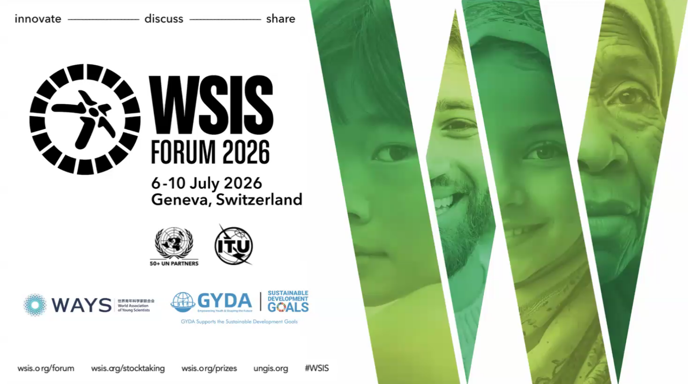
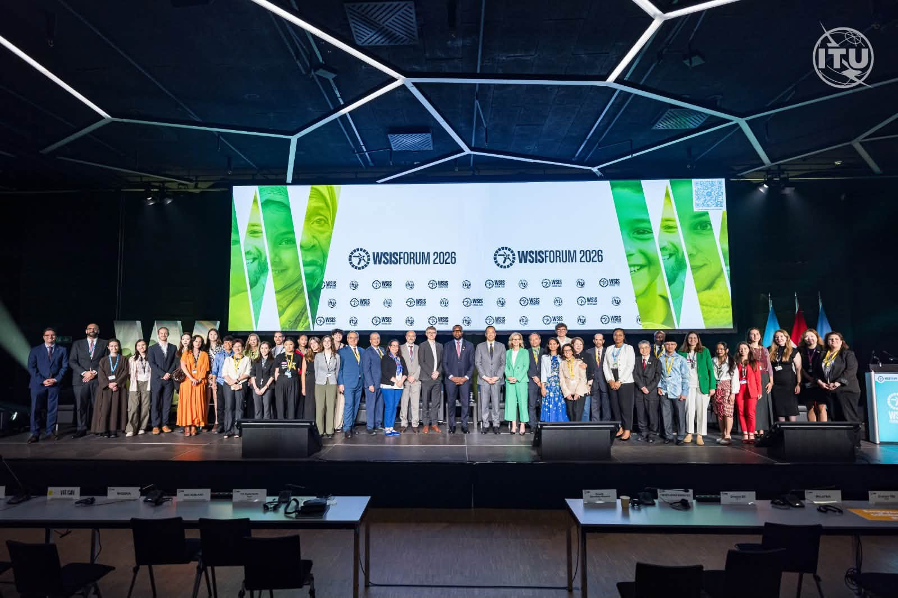
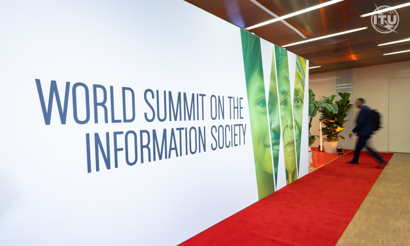
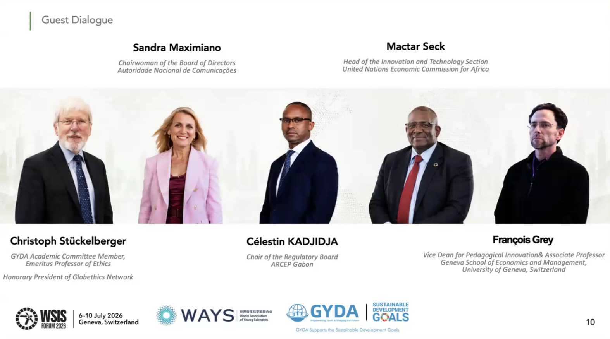
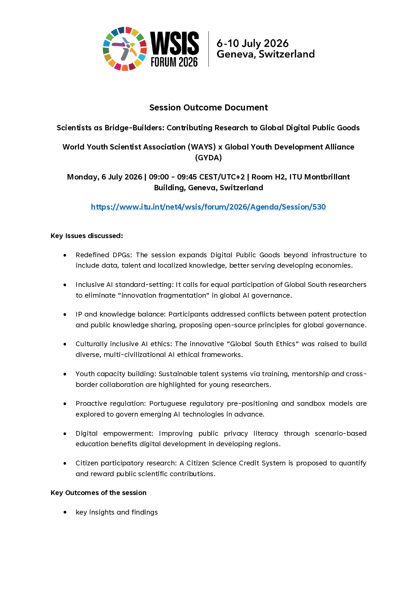
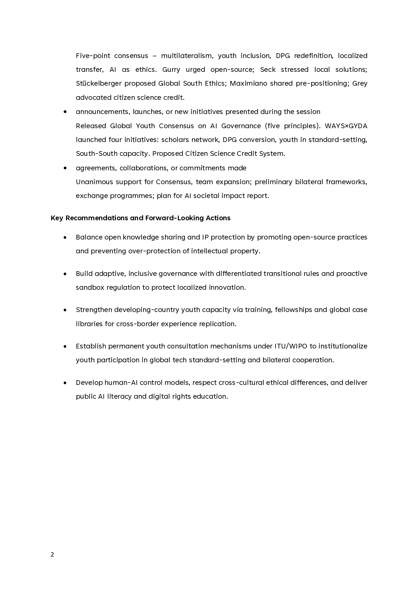

WAYS and GYDA Release Global Youth AI Governance Consensus and Four Action Initiatives at UN WSIS Forum

Location
Geneva, Switzerland
Date
July 06 - 10, 2026
The World Summit on the Information Society (WSIS) Forum 2026, organized by the International Telecommunication Union (ITU) in Geneva from 6 to 10 July 2026, convened Session 530, titled "Scientists as Bridge-Builders: Contributing Research to Global Digital Public Goods," co-hosted by the World Association of Young Scientists (WAYS) and the Global Youth Development Alliance (GYDA). The session officially released the Global Youth AI Governance Consensus and launched four youth collaboration initiatives focused on young researchers’ participation in global digital governance.

Multilateral Collaboration in Global Digital Governance
The WSIS Forum 2026 brought together core leadership across global digital governance. Key United Nations entities, including ITU, the United Nations Educational, Scientific and Cultural Organization (UNESCO), the United Nations Development Programme (UNDP), and the United Nations Conference on Trade and Development (UNCTAD), jointly advanced the forum's agenda. The Council of Europe spearheaded operational frameworks for AI safety, the Office of the United Nations High Commissioner for Human Rights (OHCHR) collaborated with the Carr-Ryan Center at Harvard Kennedy School on technology politics, and the International Labour Organization (ILO) addressed the impact of AI on decent work. Within this multilateral deliberative setting, WAYS and GYDA mobilized the global young scientific community, embedding the empirical solutions of early-career researchers into the multilateral governance landscape.

Five Core Principles of the Global Youth AI Governance Consensus
The Global Youth AI Governance Consensus released at the session articulates five guiding principles:
- Multilateralism. Global digital governance and the provision of Digital Public Goods (DPGs) must be grounded in multilateral frameworks. Francis Gurry, Former Director General of the World Intellectual Property Organization (WIPO) and Senior Advisor to GYDA, emphasized during his address that scientific knowledge and technological tools should be shared through open-source principles to dismantle institutional barriers to knowledge access.
- Youth Inclusion. Sustainable, institutionalized pathways must be established for young scientists within global technology governance, enabling a strategic transition from symbolic observation to substantive involvement in agenda-setting and rule-making.
- DPG Redefinition. The definition and scope of DPGs must expand beyond foundational digital infrastructure to encompass high-quality datasets, specialized human capital, and localized knowledge systems, effectively responding to the structural requirements of developing economies.
- Localized Transfer. Mactar Seck, Head of the Innovation and Technology Section at the United Nations Economic Commission for Africa (UNECA), stressed that global digital governance frameworks must adapt to regional realities. Avoiding one-size-fits-all approaches through localized implementation ensures that international norms generate tangible public value.
- AI as Ethics. Christoph Stückelberger, Honorary President of Globethics, Emeritus Professor of Ethics at the University of Geneva, and Academic Committee Member of GYDA, proposed a culturally inclusive "Global South Ethics" framework; Sandra Maximiano, Chairwoman of the Board of Directors of the National Communications Authority of Portugal (ANACOM), detailed the application of proactive regulation and regulatory sandboxes across the technology life-cycle; and François Grey, Vice Dean and Associate Professor at the Geneva School of Economics and Management (GSEM), University of Geneva, advocated for a Citizen Science Credit System to institutionalize public incentives and anchor technological governance in public ethical values.

Four International Youth Collaborative Initiatives Launched
Operationalizing the consensus principles, WAYS and GYDA jointly launched four international action initiatives during the forum:
- Scholars Network. Constructing an interdisciplinary, cross-border research network of young scientists to bridge fundamental scientific research, public goods development, and global multilateral governance.
- DPG Conversion. Establishing a dedicated operational mechanism to accelerate the transformation of laboratory research findings into open-source, reusable, and cross-border deployable DPGs.
- Youth in Standard-Setting. Facilitating the systematic entry of young researchers into international technical standard-setting processes within agencies such as ITU and WIPO, embedding the professional contributions of early-career scientists into foundational protocols and governance architectures.
- South-South Capacity. Delivering AI technical training and knowledge-sharing programs across the Global South to bridge digital and intelligence divides, strengthening the capacity of developing countries as autonomous governance stakeholders.


Actionable Recommendations for Policymakers and Collaborative Commitments
Looking toward the next phase of global digital governance, the session submitted five recommendations to international policymakers: first, balance open-source knowledge sharing with intellectual property protection to prevent over-protection from compromising the public utility of knowledge; second, construct adaptive and inclusive governance systems utilizing proactive regulatory sandboxes to safeguard local innovation; third, enhance the research capabilities of youth in developing countries through international fellowships and global case repositories; fourth, establish permanent youth advisory mechanisms within ITU and WIPO frameworks; fifth, develop human-in-the-loop oversight models to enhance public AI literacy and digital rights protection.
During the session, international delegations and multilateral institutions expressed firm endorsement of the Global Youth AI Governance Consensus. Bilateral cooperation frameworks and academic exchange programs were established, alongside the formal launch of the inaugural AI Social Impact Report, advancing youth governance outcomes from conceptual consensus to enduring institutional practice.